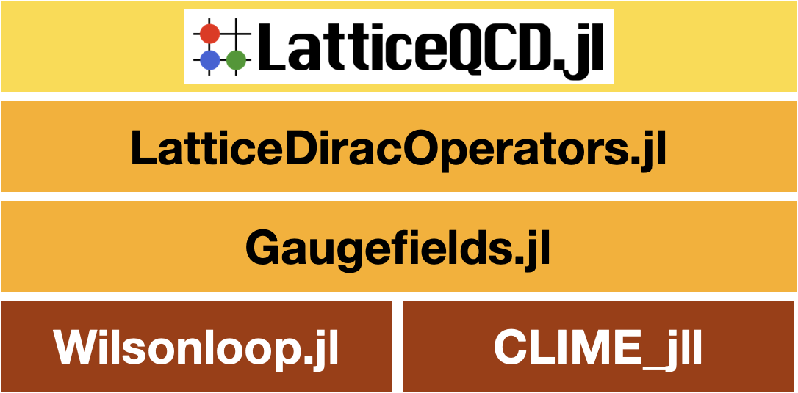

Gaugefields
Documentation for Gaugefields.

Abstract
This is a package for lattice QCD codes. Treating gauge fields (links), gauge actions with MPI and autograd.
This package will be used in LatticeQCD.jl.
What this package can do:
This package has following functionarities
- SU(Nc) (Nc > 1) gauge fields in 2 or 4 dimensions with arbitrary actions.
- Configuration generation
- Heatbath
- quenched Hybrid Monte Carlo
- Gradient flow via RK3
- I/O: ILDG and Bridge++ formats are supported (c-lime will be installed implicitly with CLIME_jll )
- MPI parallel computation (experimental. not shown)
Dynamical fermions will be supported with LatticeDiracOperators.jl.
In addition, this supports followings
- Autograd for functions with SU(Nc) variables
- Stout smearing (exp projecting smearing)
- Stout force via backpropagation
Autograd can be worked for general Wilson lines except for ones have overlaps.
Install
add Gaugefields